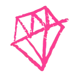
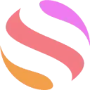

МолекулаАгрегаторы нейросетей
Молекула объединяет модели для текстов, изображений, видео и музыки. В одном аккаунте можно подобрать инструмент под этап работы, сохранить инструкции проекта и использовать готовые роли.
К задаче в МолекулеГенерация видео: Для первого сравнения используйте одинаковый запрос и исходник. Оцените движение, устойчивость героя, доступную длину и экспорт.
Опишите один эпизод для видеозаставки: объект, его движение и поведение камеры. Начните с простой сцены без смены мест; при просмотре проверьте, не изменились ли предмет и фон по ходу ролика.
Создай короткую сцену: красная чашка на деревянном столе у окна, над напитком поднимается пар. Камера плавно приближается, утренний свет остаётся ровным, посторонние предметы не появляются.

Молекула объединяет модели для текстов, изображений, видео и музыки. В одном аккаунте можно подобрать инструмент под этап работы, сохранить инструкции проекта и использовать готовые роли.
К задаче в Молекуле
Argil AI помогает собирать процессы с участием ИИ без написания программного кода. Предусмотрены шаблоны для разных задач и настройка под пользователя. Через API можно связывать работу с другими инструментами, дополняя выбранный сценарий доступными средствами персонализации продукта.
Адрес DeepMode сейчас ведёт на ClipMode — сервис создания изображений и видео по референсу лица. Работа строится вокруг образа выбранного персонажа. Подготовьте исходник, которым вправе пользоваться, и после генерации сравните черты лица и узнаваемые детали в изображении или кадрах ролика.

Grok объединяет диалог, поиск по вебу и X, работу с материалами и создание контента. Для исследования полезно отдельно проверять найденные источники и собственные выводы модели.

В инструменте «HumanPal» можно собирать видеосцену по описанию или визуальному исходнику. Ещё одно направление работы: готовить видеоматериалы для публикации.

В инструменте «MPCard.ai» можно собирать видеосцену по описанию или визуальному исходнику. Ещё одно направление работы: готовить видеоматериалы для публикации.
Nero AI Video помогает монтировать видеоматериал и обрабатывать готовые ролики. Инструмент предназначен для задач изменения видео средствами ИИ.

Vidgenie.ai относится к инструментам, которые помогают собирать видеосцену по описанию или визуальному исходнику. Ещё одно направление работы: готовить видеоматериалы для публикации.

AICUT рассчитан на задачи, где нужно собирать видеосцену по описанию или визуальному исходнику. Ещё одно направление работы: готовить видеоматериалы для публикации.

Aitubo создаёт изображения из эскизов с помощью ИИ, включая игровые материалы и фотографии. В продукте также представлены мультяшные визуальные варианты. Редактор позволяет изменять созданные изображения и уточнять художественные ресурсы, связывая генерацию и дальнейшую обработку в одном процессе.

AIVideo относится к инструментам, которые помогают собирать видеосцену по описанию или визуальному исходнику. Ещё одно направление работы: собирать видео с цифровым ведущим.

APIHOST.RU используют, чтобы подготавливать озвучку текстового материала. Ещё одно направление работы: собирать видеосцену по описанию или визуальному исходнику.

DreamFace рассчитан на оживление портрета и сценарии с поющей фотографией. Исходный образ и выбранный звук задают основу будущей анимации.

В инструменте «GlobalGPT» можно собирать видеосцену по описанию или визуальному исходнику. Ещё одно направление работы: получать изображения из словесного задания.
Hunyuan от Tencent генерирует изображения на основе описания. Модель подходит для задач создания визуального материала с реалистичным характером изображения.
LongCat создаёт видео на основе текстового описания. Пользователь задаёт содержание ролика словами, после чего получает сгенерированный визуальный материал.
В инструменте «MimicPC» можно собирать видеосцену по описанию или визуальному исходнику. Ещё одно направление работы: получать изображения из словесного задания.

SeaArt AI помогает создавать рисунки с использованием разных ИИ-моделей. Продукт предоставляет библиотеку моделей и рекомендации, дополняющие подготовку изображения. Взаимодействие с сообществом также входит в описанные возможности, связывая визуальную работу автора с просмотром и обсуждением художественных материалов.

В инструменте «Veo 3.1 (Google DeepMind)» можно собирать видеосцену по описанию или визуальному исходнику. Ещё одно направление работы: готовить видеоматериалы для публикации.
ZSky AI используют, чтобы собирать видеосцену по описанию или визуальному исходнику. Ещё одно направление работы: получать изображения из словесного задания.
Клипси: Nano Banana & Veo 3 используют, чтобы собирать видеосцену по описанию или визуальному исходнику. Ещё одно направление работы: готовить видеоматериалы для публикации.

invideo AI относится к инструментам, которые помогают собирать видеосцену по описанию или визуальному исходнику. Ещё одно направление работы: готовить видеоматериалы для публикации.

Luma Dream Machine относится к творческой среде Luma для подготовки и доработки визуальных материалов. Подходит для разработки сцены и согласования вариантов в контексте проекта.

Nextify.ai используют для задачи: собирать видеосцену по описанию или визуальному исходнику. Ещё одно направление работы: готовить видеоматериалы для публикации.
Rave AI помогает создавать ролики с художественной подачей и визуальный арт. Инструмент ориентирован на креативные задачи подготовки видеоматериала.

Abun рассчитан на задачи, где нужно готовить видеоматериалы для публикации. Ещё одно направление работы: собирать видеосцену по описанию или визуальному исходнику.
DeepBrain AI превращает готовый текст в видео с цифровым ведущим. Подходит для роликов, где материал подаётся в формате студийного выступления.

Fliki связывает текстовый материал с подготовкой озвученного видео. Для понятного ролика нужно согласовать порядок сцен с речью и длительностью эпизодов.
freebeat.ai относится к инструментам, которые помогают готовить музыкальную композицию по заданию. Ещё одно направление работы: собирать видеосцену по описанию или визуальному исходнику.

Google Flow Music используют для задачи: готовить музыкальную композицию по заданию. Ещё одно направление работы: собирать видеосцену по описанию или визуальному исходнику.
Google Vids относится к инструментам, которые помогают собирать видеосцену по описанию или визуальному исходнику. Ещё одно направление работы: готовить видеоматериалы для публикации.

Kinetix относится к инструментам, которые помогают готовить трёхмерный объект для проекта. Ещё одно направление работы: собирать видеосцену по описанию или визуальному исходнику.
LTX создаёт видео со звуком с помощью моделей Lightricks. Для работы предусмотрены открытые веса и обращение через облачный API.
MakeUGC используют, чтобы собирать видеосцену по описанию или визуальному исходнику. Ещё одно направление работы: готовить видеоматериалы для публикации.

Pika объединяет инструменты генерации и обработки видео, изображений и звука. Для короткой сцены важно определить действие, сохраняемые детали и способ последующего монтажа.

НейроЖук предлагает несколько направлений генерации: визуальный контент, звук и текстовые задачи. Перед началом полезно определить нужный результат и выбрать соответствующий режим.

D-ID создаёт видео с цифровыми ведущими и интерактивными аватарами. Полезен для объяснений и информационных сценариев с заранее согласованным образом и содержанием.

Dubb используют, чтобы собирать видеосцену по описанию или визуальному исходнику. Ещё одно направление работы: готовить видеоматериалы для публикации.
Gemini Omni Flash используется для генерации видео средствами ИИ. Инструмент предназначен для создания видеоматериала с помощью нейросети.
Google Flow ориентирован на подготовку генеративных видеосцен. Для связного материала важны содержание эпизода и устойчивость выбранных визуальных деталей.

В инструменте «HitPaw Edimakor» можно собирать видеосцену по описанию или визуальному исходнику. Ещё одно направление работы: готовить видеоматериалы для публикации.
Jimeng объединяет генерацию музыки, изображений и видео в сервисе ByteDance. Для доступа используется аккаунт Douyin, продукт ориентирован на Китай.

MagicLight.AI относится к инструментам, которые помогают собирать видеосцену по описанию или визуальному исходнику. Ещё одно направление работы: готовить видеоматериалы для публикации.
Maverick используют для задачи: собирать видеосцену по описанию или визуальному исходнику. Ещё одно направление работы: готовить материалы о товарах и услугах.

OpenAI Sora используют для задачи: собирать видеосцену по описанию или визуальному исходнику. Ещё одно направление работы: готовить видеоматериалы для публикации.

Reels Boss относится к инструментам, которые помогают собирать видеосцену по описанию или визуальному исходнику. Ещё одно направление работы: готовить видеоматериалы для публикации.

Revid AI помогает превратить тему или подготовленный материал в ролик для публикации. Важны связность сценария, оформление кадра и итоговый формат экспорта.
Scenario предлагает генеративную работу с материалами для визуального проекта. Полученные элементы нужно проверять на совместимость с остальным содержанием и средствами разработки.
Страница 1 из 3
Для видеосцены с настольной лампой определите одно действие: плавное приближение камеры или небольшое изменение окружающего света. Выпишите форму корпуса, цвет и положение кнопок. Эти признаки нужно сохранить, иначе привлекательный результат перестанет показывать именно ваш товар.
Подготовьте исходный кадр без лишних перекрытий и мелких надписей. В промте отделите движение камеры от движения предмета. Если оба меняются одновременно, будет сложнее понять, из-за чего нарушилась форма или появилось неестественное отражение.
Kling AI поддерживает создание видео по тексту и изображению. Для предметной пробы сравнивайте сохранение исходного силуэта и управляемость движения. Просматривайте не только первый кадр, но и участок, где камера перемещается сильнее всего.
Runway объединяет генерацию и изменение визуальных сцен. Его полезно проверить, если задача включает обработку существующего материала. Перед правкой определите разрешённую область изменения и сравните её с исходником на протяжении всего фрагмента.
Оба результата нужно поместить в черновой монтаж. Красивая отдельная сцена может плохо соединяться с соседним планом из-за направления движения. Проверяйте пригодность к последовательности, а не только качество единичного превью.
Сверьте геометрию товара, контакт с поверхностью и направление теней. Отметьте моменты, где появляются изменения. Иногда пригодна только часть клипа; её границы нужно согласовать, прежде чем готовить остальные сцены с тем же движением.
В аккаунте проверьте расход выбранного режима, способ получения файла и условия публикации. Для людей и клиентских исходников нужно разрешённое использование. Финальная сборка рассматривается в разделе монтажа и редактирования, где отдельно проверяются звук, титры и переходы.
Записывайте причину отклонения каждого варианта: меняется упаковка, ломается перспектива или объект выходит из кадра. Эти заметки помогут отличить проблему исходника от неудачного запроса и выбрать полезную следующую попытку.